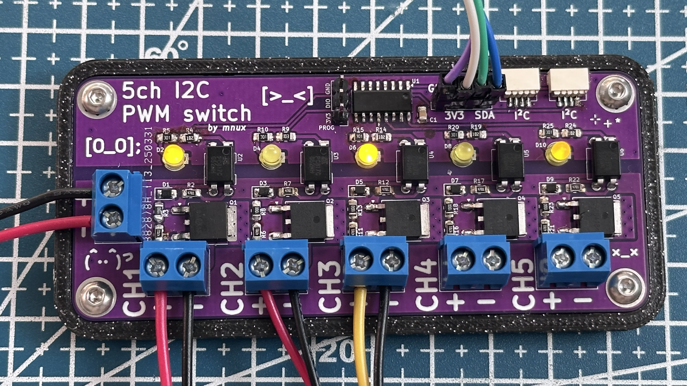
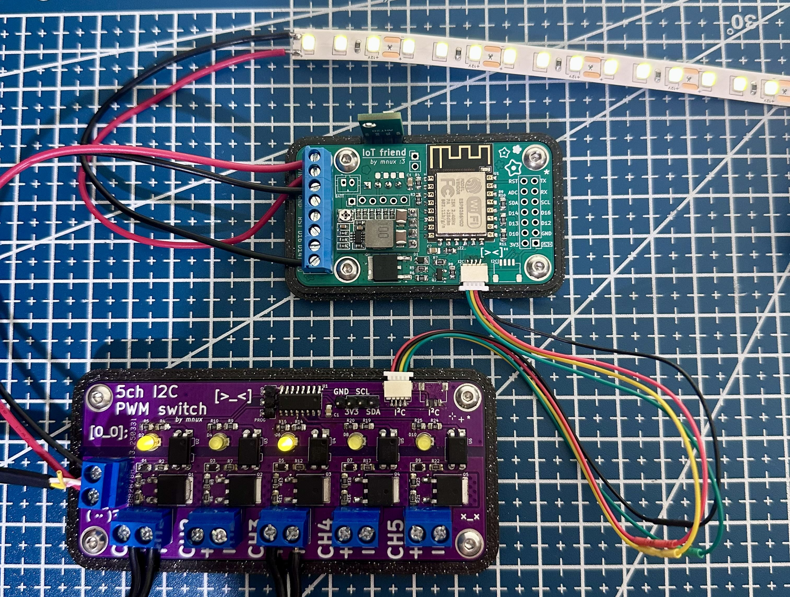

5 channel I2C PWM switch

Overview
This board connects over a the two wire I2C bus and provides a 5 PWM low side switches. This can be handy if you are running low on GPIO (eg. ESP8266) or just want a simple solution.
Usage
- Arduino - I made a super simple library for arduino: Download
//include the I2C PWM library you can download from mnux.xyz
#include <I2CPWM.h>
//creates an expander called "myExpander"
I2CPWM myExpander(8); // selects an expander connected on address 8
void setup(){
// to set a PWM value:
// myExpander.setPWM(channel, value);
myExpander.setPWM(1,128); // sets channel 1 to 50% duty
}
void loop(){
}
- ESP Home (Home Assistant) - You can easily use it from ESP Home without any custom libraries:
Component choice
MCU - I wanted to use a purpose made I2C PWM expander however i couldn't find a suitable one so in the end i decided to use a WCH general purpose MCU and write my own firmware for it. It is a really cheap mcu and comes in a simple to solder package so i choose it even tho i have never used it before.
Mosfets - D4814 mosfets which are cheap on ali.
For the optocouplers i used a THT version because they have a smaller footprint than their SMD counterparts.
Firmware
I used the openwch core for arduino IDE and made a simple firmware. On start it check for the address jumpers and starts an i2c with the appropriate address. After that it just waits for i2c traffic which triggers a function that interprets the messages and sets PWM outputs. Firmware download
A big problem with my first time trying to program a WCH chip was that i had no idea there were multiple kinds of programmers. The one i bought was just a WCH-Link, however for the CH32v003 i need a WCH-LinkE. Oh well I ordered the right one and just developed the code on an UNO in the mean time.
Circuitboard layout
As always i used kicad, however this being a circuit with a lot of repeating layout I got to utilize some of its more advanced features and plugins.
Mistakes
This was my first time I used this microcontroller I expected there to be a few mistakes and ofc, on channels 2 and 4 i used a non PWM pins.
For some reason I also swapped the SCL and SDA... lol
While testing what component values to use and probing around, i noticed there is no voltage on the output + terminals (which there should be because the switching is done through the negative). Turns out i reversed the silkscreen on the input.
Usecase
I setup a second revision of my universal IOT board (now the IOT friend :3) with ESPHome on a top of my rack with this expander.
Discovering that my Prusa 3D printer has support in home assistant i setup a little light for it which lights up after i start a print job.


Conclusion
Even tho the end device isnt really that interesting i thought it was still worth it making a blog post about it because of all the little techniques used that i never used in any other project. And for me, somebody who always used pre-made libraries for i2c devices it was very fun to learn how it works and make my own library.
offtopic (blog update)
I have made this blog post into a mark down file which just embeds in HTML instead of just writing it in HTML like i used to. Sadly it kindof reminds me of the style how chat bots write (or one of my teachers exams who uses AI to make them). So i wanted to say that I dont use any generative AI.